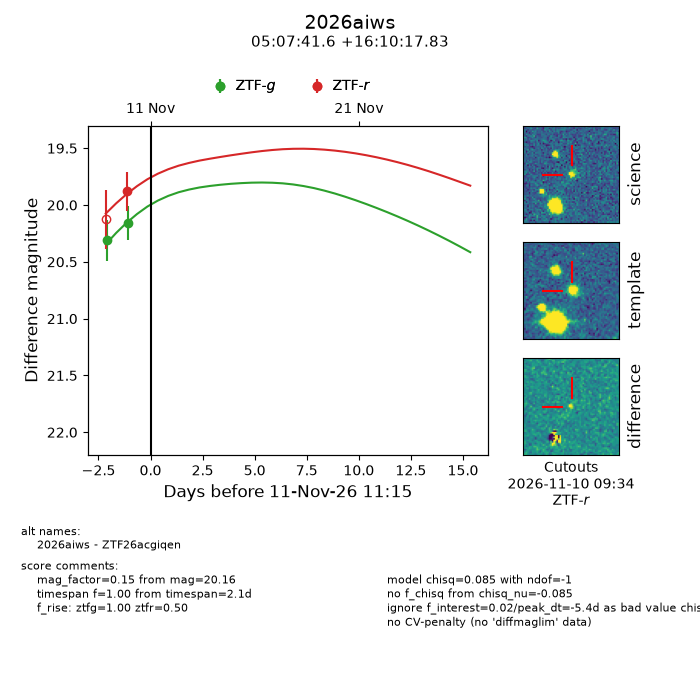
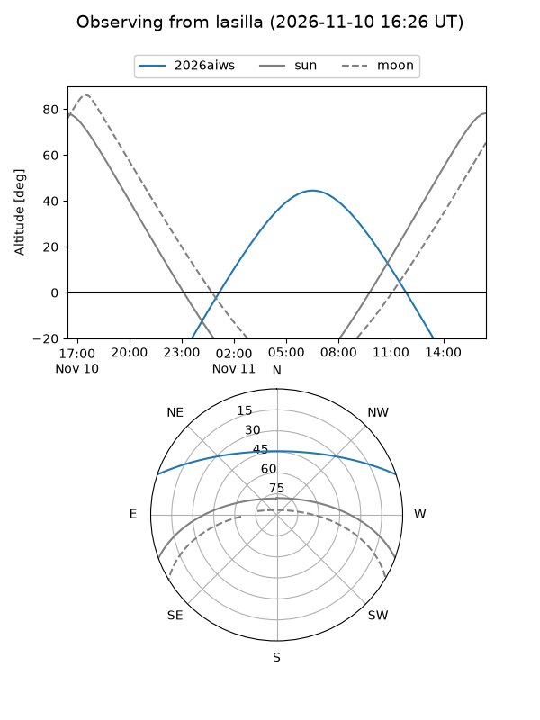
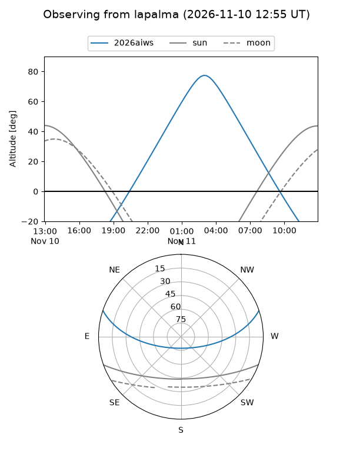
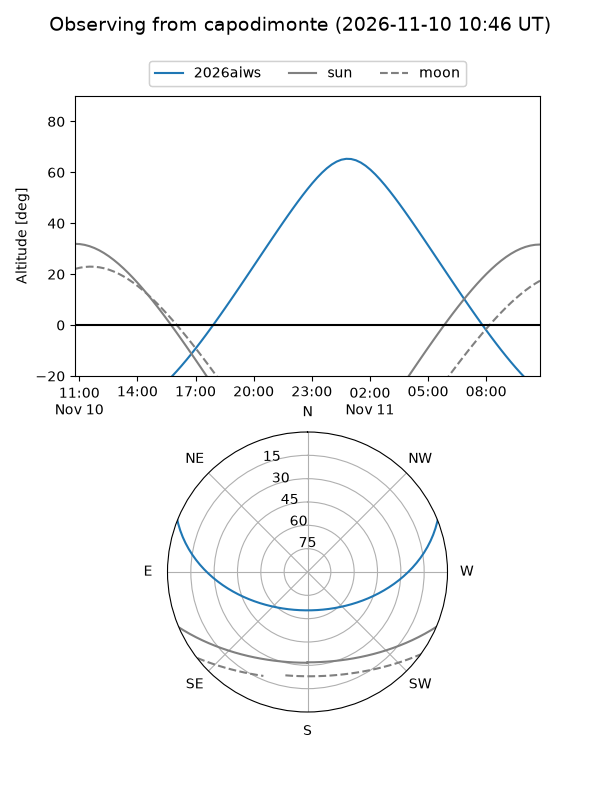
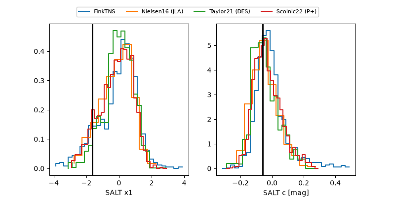

2026aiws
Target 2026aiws at 2026-11-11 11:18
Aliases and brokers:
FINK-ZTF: ztf.fink-portal.org/ZTF26acgiqen
Lasair-ZTF: lasair-ztf.lsst.ac.uk/objects/ZTF26acgiqen
ALeRCE-ZTF: alerce.online/object/ZTF26acgiqen
YSE-PZ: ziggy.ucolick.org/yse/transient_detail/2026aiws
TNS name: wis-tns.org/object/2026aiws
Direct TNS query: direct search
alt names
ZTF26acgiqen (ztf,fink_ztf)
2026aiws (tns,yse)
Coordinates:
equatorial (ra, dec) = 76.9234,+16.17162
equatorial (HMS+DMS) = 05:07:41.63,+16:10:17.83
galactic (l, b) = (185.9667,-14.29126)
Flags:
peak dt: -5.4
Photometry:
last ztfg=20.16, ztfr=19.88
2 ztfg, 1 ztfr detections
Lightcurve

Visibility



Additional plots
